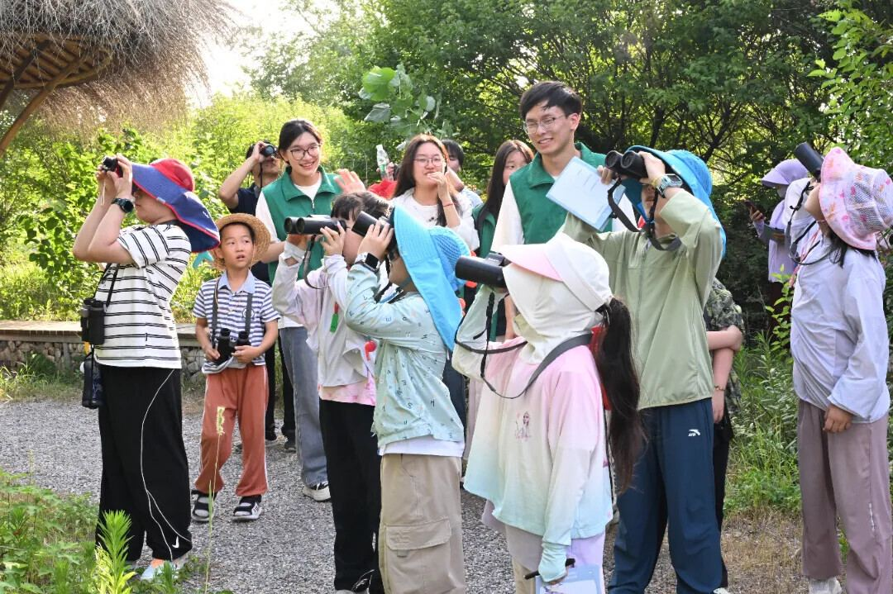
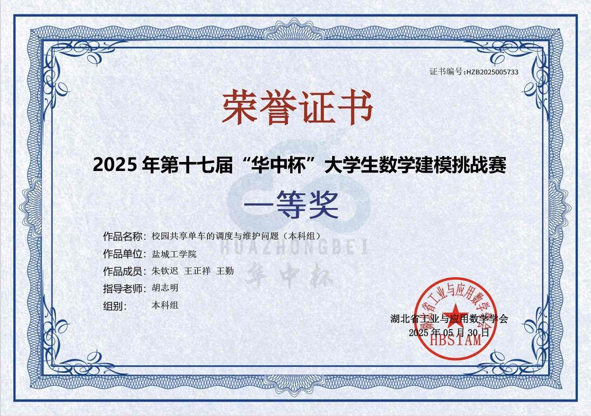
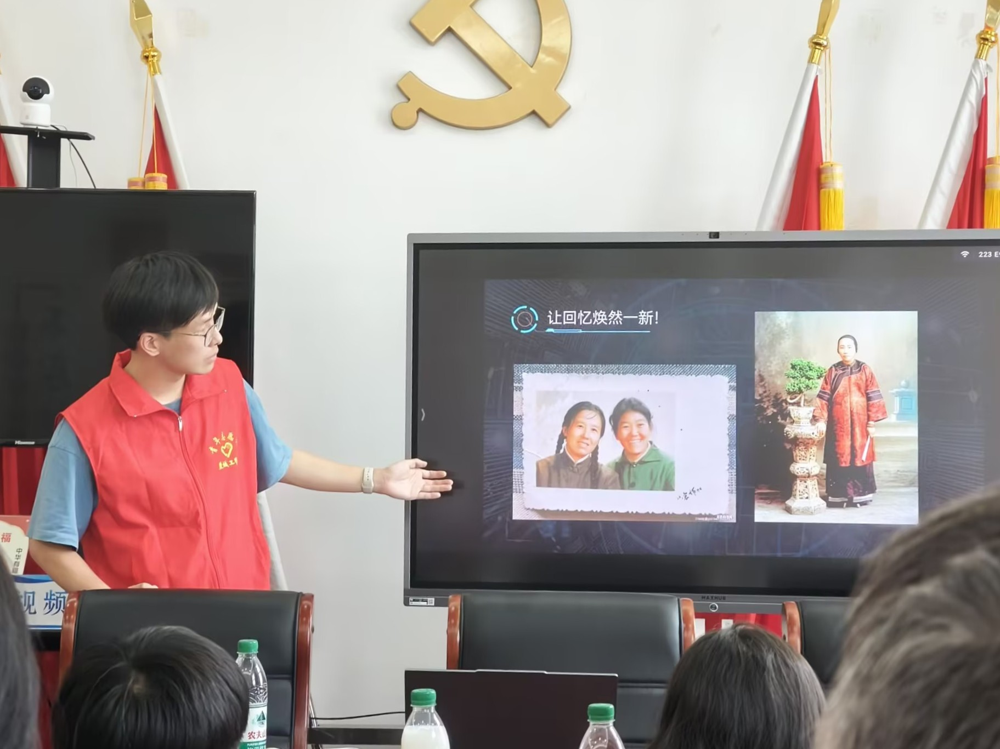
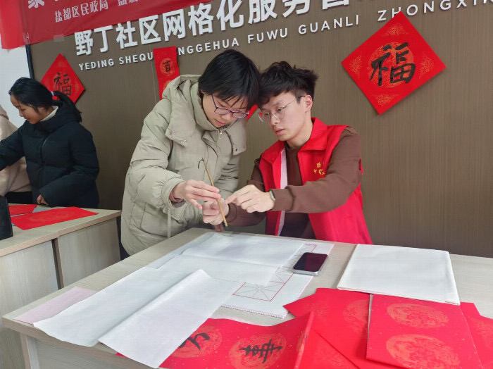
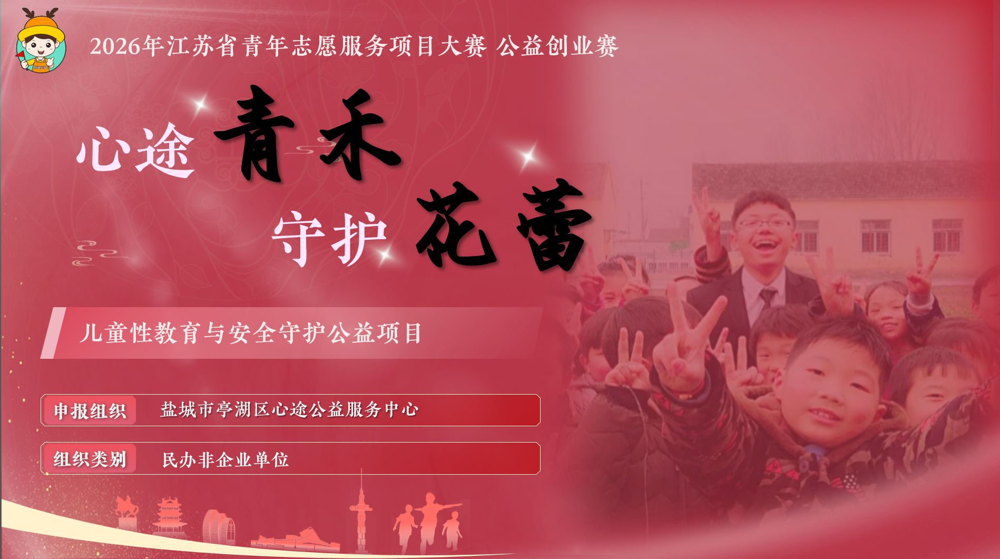
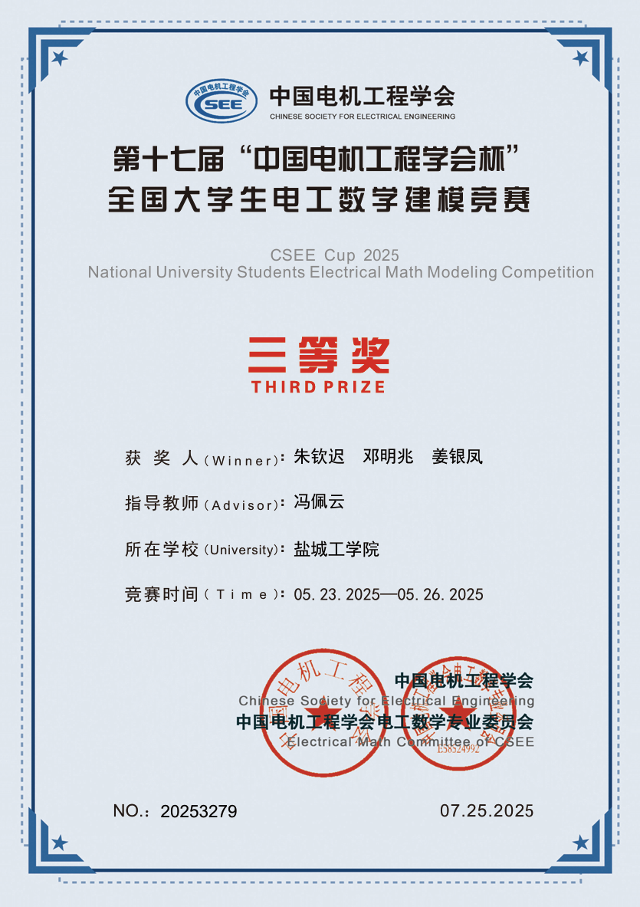
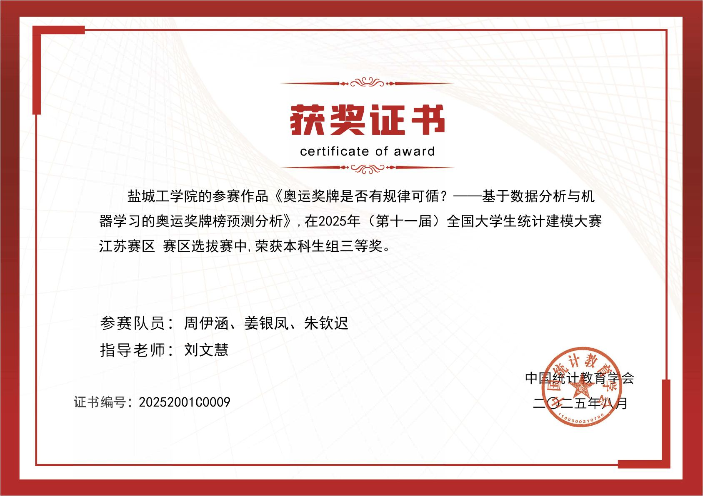

Pinned Project
绝知此事要躬行
Category Index
俯察品类之盛
Browse by type
分类索引


PRACTICE / 实践策划
“AI进社区”社会实践调研团
“AI技术进社区——零距离体验未来”主题实践活动。融合了科技体验与人文关怀，为社区居民带来了别样的科技体验。
ROLE / 团队队长
详情 →


DESIGN / PPT设计
省志愿服务大赛答辩PPT设计
为“心途公益，守护花蕾”团队制作项目答辩PPT，协助团队在2026年江苏省青年志愿服务项目大赛中获得二等奖。
ROLE / PPT设计
详情 →




RESEARCH / 学术研究
2025全国大学生统计建模大赛
第十一届全国大学生统计建模大赛江苏赛区本科生组三等奖作品《奥运奖牌是否有规律可循？——基于数据分析与机器学习的奥运奖牌榜预测分析》
ROLE / 作者
详情 →